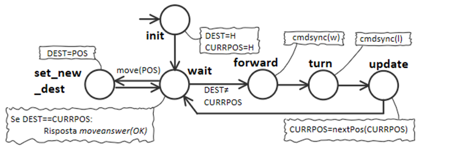
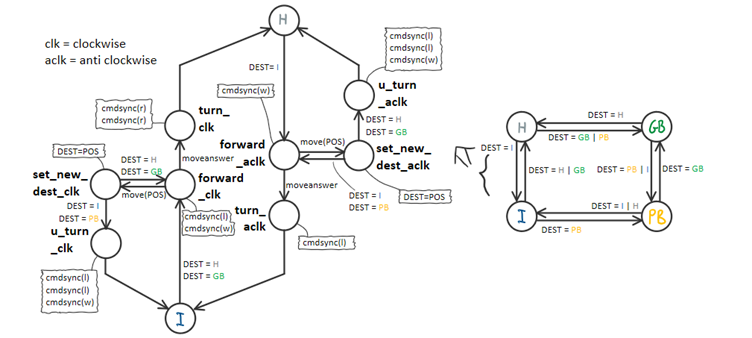

Introduction
Progetto finale di ISS, che consiste in un impianto di smistamento dei rifiuti nel quale un robot deve trasportare il materiale dal camion al relativo container
Requirements
Scrum Goal and Work Plan
Scrum goal: obiettivo dello SPRINT1 (oltre alla comprensione dei requisiti) è la creazione di una prima demo (su ambiente virtuale) che tenga presente dei soli punti 1 e 2 specificati dal committente (quelli che descrivono le Deposit action e la Service area)
Piano di lavoro:
- Comprensione dei requisiti del sistema
- Prima valutazione dell'abstraction gap, anche in relazione al SW già sviluppato (possibile visitare la pagina riassuntiva Applicazioni22 dei moduli sviluppati)
- Analisi delle principali problematiche da affrontare nello sviluppo dei componenti di cui è composto il sistema
- Definire i componenti e le interazioni fra di essi: realizzazione di una prima architettura logica
- Realizzazione di modelli usando un linguaggio di modellazione che permetta di formalizzare e di creare modelli eseguibili. A tal proposito verrà utilizzato il metamodello QAK.
- Realizzazione di un primo test-plan
Requirement analysis
Dizionario
- Waste-load:
- Termine generico per indicare il Materiale inizialmente presente sul Waste-truck
- TRUCKLOAD:
- Numero di Kg di materiale Waste-load. Formalizzazine (definito qui):
var TruckLoad : Float
- MATERIAL:
- Tipo di materiale del Waste-load, che può essere plastica o vetro. Formalizzazine (definito qui):
enum class Material { PLASTIC, GLASS } - WasteService:
- Il WasteService è un servizio che si occupa del coordinamento delle attività di raccolta e smistamento dei rifiuti. Contiene buona parte della business logic del sistema.
Viene formalizzato mediante un attore QAK che riceve le depositrequest e risponde con loadaccept o loadrejected in base al carico dei Waste-truck e allo spazio ancora disponibile in PLASTICBOX o GLASSBOX:
//MATERIAL = PLASTIC | GLASS //TRUCKLOAD = float number Request depositrequest : depositrequest(MATERIAL, TRUCKLOAD) Reply loadaccept : loadaccept(MATERIAL, TRUCKLOAD) Reply loadrejected : loadrejected(MATERIAL, TRUCKLOAD) QActor wasteservice context ctxtest{ [# var Material : ws.Material var TruckLoad : Float #] State wait initial { printCurrentMessage discardMsg Off } Transition t0 whenRequest depositrequest -> handle_req State handle_req { printCurrentMessage onMsg(depositrequest : depositrequest(MATERIAL, TRUCKLOAD)) { [# Material = ws.Material.valueOf(payloadArg(0)) TruckLoad = payloadArg(1).toFloat() #] if[# ws.func.checkdepositpossible( Material, TruckLoad ) #]{ [# ws.func.updateDeposit( Material, TruckLoad ) #] replyTo depositrequest with loadaccept : loadaccept($Material,$TruckLoad) }else{ replyTo depositrequest with loadrejected : loadrejected($Material,$TruckLoad) } } } Goto wait }
Con il file WasteServiceRequirement.qak abbiamo potuto formalizzare interfaccia e comportamento di questo componente.
Inoltre, al fine di meglio specificare il comportamento che ci si aspetta, sono stati predisposti alcuni semplici test in TestWasteservice.ktvar truckRequestStr = "msg(depositrequest, request,python,wasteservice,depositrequest(GLASS,2),1)" var answer = connTcp.request(truckRequestStr) Assert.assertTrue(answer.contains("loadaccept")) truckRequestStr = "msg(depositrequest, request,python,wasteservice,depositrequest(GLASS,9),1)" answer = connTcp.request(truckRequestStr) Assert.assertTrue(answer.contains("loadrejected")) - Service area:
- Superfice rettangolare, piana, priva di ostacoli nella quale il robot può muoversi, e nella quale sono presenti le zone INDOOR, PLASTICBOX, GLASSBOX, HOME.
Le zone vengono rappresentate mediante l'enumerativo Position.kt:
enum class Position { INDOOR, PLASTICBOX, GLASSBOX, HOME } - INDOOR:
- Porta di ingresso adibita alla raccolta del Waste-load che dal Waste-truck va al Transport trolley.
Il termine viene anche usato per indicare la zona nella quale il robot deve trovarsi per effettuare l'operazione di carico - PLASTICBOX:
- Container adibito al deposito di materiale plastico, con capienza massima pari a MAXPB Kg.
Il termine viene anche usato per indicare la zona nella quale il robot deve trovarsi per effettuare l'operazione di scarico della plastica.
Formalizzazione: la variabile contPB (definita qui) corrispondente alla capienza attuale, la costante MAXPB (definita qui) corrispondente alla capienza massima (entrambi in Kg).
var contPB : Float = 0F
val MAXPB : Float = 10.0F
- GLASSBOX:
- Container adibito al deposito di materiale vetroso, con capienza massima pari a MAXGB Kg.
Il termine viene anche usato per indicare la zona nella quale il robot deve trovarsi per effettuare l'operazione di scarico del vetro.
Formalizzazione: la variabile contGB (definita qui) corrispondente alla capienza attuale, la costante MAXGB (definita qui) corrispondente alla capienza massima (entrambi in Kg).
var contGB : Float = 0F
val MAXGB : Float = 10.0F
- HOME:
- Area nella quale risiede il robot quando non deve svolgere alcuna attività
È inoltre l'area dove si trova inizialmente il robot. - Transport trolley:
- Rappresenta un'entità robotica astratta che riceve i comandi di alto livello relativi alla prossima destinazione da raggiungere, e i comandi relativi allo scarico e carico del materiale.
Nota: il Transport trolley può ricevere una richiesta di nuova posizione prima che abbia raggiunto la destinazione precedente: la navigazione sarà impostata sulla nuova destinazione. In questo modo è possibile soddisfare direttamente nuove richieste anche mente il robot sta andando in home.
Formalizzazione://POSITION = INDOOR | PLASTICBOX | GLASSBOX | HOME //RESULT = OK | ERROR Request move : move(POSITION) Reply moveanswer : moveanswer(RESULT) Request pickup : pickup(_) Reply pickupanswer : pickupanswer(RESULT) Request dropout : dropout(_) Reply dropoutanswer : dropoutanswer(RESULT)
- DDR Robot concreto o "robot":
- Con questo termine ci si riferisce al robot vero e proprio (fisico o simulato virtualmente).
Il committente fornisce già un ambiente di simulazione che implementa un DDR Robot concreto virtuale. Documentazione: WEnv, Progetto: it.unibo.virtualRobot2020. - DDR Robot:
- Entità che riceve ed esegue i comandi di basso livello di spostamento del robot:
Il committente fornisce già molto software in grado di interfacciarsi al DDR Robot concreto di WEnv: unibo.wenvUsage22, unibo.basicRobot22, unibo.boundaryQak22
Formalizzazione: utilizzeremo l'attore QAK basicrobot presente in basicrobot22, che è in grado di interfacciarsi sia con il WEnv, che con altri robot reali.
Vengono qui brevemente illustrate le caratteristiche di basicrobot:
Possiamo comandare mosse elementari, inviando i messaggi:
//MOVE = w | a | s | d | h Dispatch cmd : cmd(MOVE)Nel caso del robot virtuale, i comandi "w" e "s" sono inviati tramite una websocket in maniera asicrona. Tali comandi sono infatti concepiti per far muovere il robot finchè non verrà rilevata una collisione con una parete.
Quando vi è una collisione viene emesso un evento del tipo:Event info : info( ARG )Gli altri comandi sono invece sincroni bloccanti, e vegnono infatti inviati sulla connessione tcp.
Grazie a questi comandi elementari, basicrobot22 è anche in grado di far fare degli step al robot:
Request step : step( TIME ) Reply stepdone : stepdone(V) Reply stepfail : stepfail(DURATION, CAUSE) - Deposit action:
- Sequenza di azioni di:
- Pickup: raccolta di Waste-load dal Waste-truck che avviene in INDOOR
- Trasporto del materiale da INDOOR a PLASTICBOX o GLASSBOX in base al tipo di materiale
- Dropout: deposito del materiale nel PLASTICBOX o GLASSBOX in base al tipo di materiale
- Waste-truck:
- Entità che si presenta in INDOOR, e richiede lo scarico del materiale che trasporta attraverso l'uso dello Smart device
- Smart device:
- Dispositivo attraverso il quale il Waste-truck comunica al WasteService:
- Il tipo di materiale trasportato:
- PLASTIC
- GLASS
- Kg di materiale
//MATERIAL = PLASTIC | GLASS //TRUCKLOAD = integer number Request depositrequest : depositrequest(MATERIAL, TRUCKLOAD) Reply loadaccept : loadaccept(MATERIAL, TRUCKLOAD) Reply loadrejected : loadrejected(MATERIAL, TRUCKLOAD) - Il tipo di materiale trasportato:
- Service-manager:
- Operatore umano che supervisiona lo stato dell'area di servizio usando una WasteServiceStatusGUI
- WasteServiceStatusGUI:
- Pannello di controllo che permette al Service-manager di monitorare:
- La posizione del Transport trolley (basta l'area nella quale si trova attualmente, non necessariamente delle coordinate spaziali)
- Lo stato attuale del Transport trolley
- Il peso corrente contPB e contGB del materiale contenuto in PLASTICBOX e in GLASSBOX
- Lo stato del LED
- LED concreto:
- Dispositivo di output connesso al RaspberryPI (che NON è a bordo del DDR Robot)
- LED:
- Entità attiva e astratta che rappresenta il LED concreto:, è che può essere impostato secondo 3 modalità:
- Led Off: quando il Transport trolley è in HOME
- Led On: quando il Transport trolley è fermo (quando distanza rilevata < DLIMIT)
- Led Blink: quando il Transport trolley è in movimento, o sta scaricando/caricando materiale
Il committente fornisce già del software per relativo al led in it.unibo.radarSystem22.domain
- Sonar concreto:
- Dispositivo di input connesso al RaspberryPI (che NON è a bordo del DDR Robot)
- Sonar:
- Entità che rappresenta il sonar concreto.
Il committente fornisce già del software relativo al sonar in unibo.basicrobot22, it.unibo.radarSystem22.domain, unibo.sonarqak22
Formalizziamo il sonar con un attore QAK. In particolare nel progetto unibo.sonarqak22 esiste un attore sonarqak22 in grado di emettere eventi in base alla distanza rilevata da sonar reale o simulato:
Dispatch sonaractivate : info(ARG) Dispatch sonardeactivate : info(ARG) Event sonar : distance( V ) //emitted by sonarSimulator or sonardatasourceI comandi sonaractivate e sonardeactivate servono rispettivamente per attivare e disattivare il sonar, mentre l'evento sonar viene emesso o da sonarsimulator, o da sonardatasource e inviato al prossimo attore della pipe. La pipe può essere configurata nel seguente modo:
if( simulate ) firstActorInPipe = sysUtil.getActor("sonarsimulator")!! //generates simulated data else firstActorInPipe = sysUtil.getActor("sonardatasource")!! //generates REAL data firstActorInPipe. subscribeLocalActor("datacleaner"). //removes 'wrong' data'' //subscribeLocalActor("datalogger"). //logs (shows) the data generated by the sonar //subscribeLocalActor("sonar"). //handles sonarrobot but does not propagate ... //subscribeLocalActor("distancefilter"). //propagates the lcoal stream event obstacle subscribeLocalActor(sonarActorName)In particolare l'attore distancefilter si occupa di filtrare gli eventi e inviare al prossimo attore solo eventi di tipo obstacle:obstacle($distance) solo nel caso in cui la distanza rilevata sia minore di una distanza prefissata.

- DLIMT:
- Misura in CM della distanza limite. Se la distanza attualmente misurata dal Sonar concreto è ≤ DLIMT, il robot deve essere nello stato stopped. Qunando la distanza misurata > DLIMIT il robot può muoversi
Viene formalizzato tramite una costante DLIMIT.
val DLIMIT : Float
Problem analysis
Transport trolley
DDR robot vs Transport trolley:
-
Possibile una separazione dei due concetti:
il DDR robot è concepita come una entità di basso livello che riceve comandi://MOVE = w | a | s | d | h Dispatch cmd : cmd(MOVE) -
Mentre il Transport trolley è concepita come entità astratta che si occpura di ricevere la destinazione generica
//POSITION = INDOOR|PLASTICBOX|GLASSBOX|HOME Request move : move(POSITION) Reply moveanswer : moveanswer(RESULT)
La relazione che esiste tra WasteService e Transport trolley è quindi di tipo "use".
Questa separazione tra in due layer rende il sistema più resitente ad eventuali future variazioni della tecnologia utilizzata per il robot (movimento a step con coordinate o meno, tipologia di hardware del robot). Il WasteService continuerà ad inviare al Transport trolley gli stessi comandi astratti, senza preoccuparsi di "in che modo" o "con quali mezzi" la destinazione viene raggiunta.
Transport trolley non gestisce autonomamente carico/scarico:
Per questioni di flessibilità, abbiamo tenuto separate le operazioni di carico, scarico e movimento: l'idea è che se un domani si dovesse modificare il processo di smistamento,
basterà modificare la sequenza di comandi che vengono impartiti al Transport trolley, senza bisogno di modificare quest'ultimo.
Inoltre, anche se il committente ha detto che le operazioni di carico e scarico possono essere modellate come semplici timeout, abbiamo ritenuto concettualmente corretto far
gestire questa operazione all'entità Transport trolley (un domani potrebbe aver bisogno di inviare comandi ad altri componenti per fare azioni vere e proprie).
//RESULT = OK | ERROR
Request pickup : pickup(_)
Reply pickupanswer : pickupanswer(RESULT)
Request dropout : dropout(_)
Reply dropoutanswer : dropoutanswer(RESULT)
Interazioni con il Transport trolley:
Si noti come le interazioni con il Transport trolley siano tutte delle request-response.
Colui che comanda il Transport trolley (cioè una visione astratta e ad alto livello del robot) si aspetta una interazione sincrona bloccante, e si aspetta una risposta con l'esito dell'operazione.
Tuttavia, solo per il comando move(POSITION), è possibile comandare una nuova destinazione anche se quella precedente non è stata ancora raggiunta.
Questo perchè è possibile che arrivi un nuovo Waste-truck mentre il Transport trolley sta tornando a HOME. In questo modo è possibile soddisfare il requisito di gesione immediata della nuova richiesta senza aspettare che il Transport trolley raggiunga HOME.
Il nuovo comando annulla di fatto la move precedente, quindi si riceverà solo la risposta relativa all'ultimo comando.
Principio di funzionamento del Transport trolley:
Sistema a coordinate, o semplice macchina a stati che rileva impatto con i muri?
La particolare collocazione delle zone INDOOR, PLASTICBOX, GLASSBOX, HOME rende attuabile una soluzione che non richiede l'utilizzo di coordinate: il robot può infatti muoversi all'interno della Service area lungo le pareti, orientandosi semplicemente rilevando le collisioni con le pareti.
In questa sezione analizziamo i punti a favore dell'utilizzo un sistema a coordinate e uno senza coordinate:
I vantaggi nell'utilizzo di un sistema a coordinate:
- Potenziale riuso di moduli che già abbiamo sviluppato (mapper, planner)
- Maggiore flessibilità (posizione dei siti non è più negli angoli, robot deve seguire un percorso ottimo, ostacoli nel percorso, gestione più semplice del cambio di destinazione mentre il robot è in movimento)
I vantaggi nell'utilizzo di un sistema senza coordinate:
- Minor complessità, minor costo
- Maggior velocità negli spostamenti, e maggior velocità di reazione a comandi di halt
- Possibile miglior reazione (piuttosto che a singoli step) da parte di robot reali che non fatto uso di sistemi in feedback o altro hardware per controllare meglio la propria posizione
Per la realizzazione del Transport trolley sono state analizzate 3 diverse opzioni, che vengono qui descritte:
OPZIONE 1
Si tratta di una semplice macchina a stati che è in grado di raggiungere la destinazione facendo fare al robot sempre un giro in senso antiorario.
Se viene cambiata la destinazione mentre il robot è in movimento, esso non cambia direzione, perchè comunque per raggiugere ogni altro sito procede in senso antiorario, e quindi il prossimo sito deve comunque essere raggiunto.
Pro e Contro:
- + semplicità
- + possibile estendere la soluzione appena mostrata per attenere l'opzione successiva
- - poca flessibilità
- - politica non molto efficiente
La macchina a stati che deve essere implementata all'interno di Transport trolley se si vuole percorrere questa soluzione è la seguente:
Tuttavia è possibile implementarla in maniera più sintetica e compatta nel seguente modo:
OPZIONE 2
Si tratta di un'estensione dell'opzione 1: il robot è in grado di raggiungere la prossiama destinazione procedendo sia in senso orario che in senso antiorario (in base a cosa è più conveniente in quel momento). Inoltre il robot può cambiare rotta anche mentre si sta muovendo in avanti.
Pro e Contro:
- + più veloce in alcuni casi
- - più complesso
La macchina a stati che deve essere implementata all'interno di Transport trolley si complica, perchè tra ogni "macro stato" e l'altro il ramo ha molti più stati:
E' pur sempre possibile una implementazione più sintetica e compatta:
OPZIONE 3
Il modulo, data la posizione corrente e l'orientamento del robot, fa un certo numero di step per raggiungere le coordinate di destinazione.
Pro e Contro:
- + flessibilità
- + esiste sw per mappare le dimensioni della stanza (unibo.mapperQak22) e per trovare path (unibo.planner22)
- - rischiesto mapping iniziale della servicearea
- - le dimensioni della servicearea potrebbero non essere multiple di RD. È dunque necessaria una logica che (una volta raggiunte le coordinate di destinazione) faccia andare il robot a contatto con la porta, per poter effettuare le operazioni di carico/scarico.
Scelta: OPZIONE 1
Scegliamo la prima soluzione perché è la più semplice e quindi economica, fermo restando che a partire da questa è possibile estenderla per ottenere la seconda versione.
Inoltre se un giorno nuovi requisiti dovessero imporre l'utilizzo di un sistema di coordinate, verrebbe modificato soltanto il componente "transporttrolley".
WasteService
Possiamo pensare il WasteService come il componente controller, ossia quello che contiene la business logic del sistema.
Abbiamo analizzato le funzionalità che il servizio WasteService deve offrire, e abbiamo quindi formalizzato tale entità con il modello qak.
Per una migliore comprensione il diagramma degli stati di questo attore viene qui riassunto con il seguente schema:

Impostazione di una prima architettura logica
- Possiamo pensare il WasteService come il componente controller contenente business logic, ossia quello che contiene le azioni da svolgere per realizzare il processo di smistamento (le Deposit action)
- DDR Robot è collocato su un contesto collocato in un nodo a bordo del DDR Robot concreto.
Risulta concettualmente sensato porre nello stesso contesto Transport trolley.
Transport trolley potrebbe infatti necessitare di cambiamenti nel caso in cui cambi il DDR Robot concreto e la tecnologia di movimento usata.
Si noti tuttavia che, qualora tale componente debba fare utilizzo di un planner (che effettua una ricerca nello spazio degli stati), allora si dovrebbe considerare la possibilità di porre tale attore su un nodo computazionale più potente, dove il consumo di potenza non è un problema (mentre si presume che il robot sia alimentato a batteria) - LED concreto e Sonar concreto sono collegati al RPI, e sono quindi su un contesto a parte: analizzeremo in sprint successivi tali componenti. Anche la GUI verrà analizzata successivamente
 Per maggiore comprensione della architettura logica si faccia riferimento al simbolismo della legenda
Per maggiore comprensione della architettura logica si faccia riferimento al simbolismo della legenda
Test plans
Sono stati resi osservabili tramite Coap gli attori WasteService e TrasportTrolley.
Sono state inoltre create due classi di utilità TestObserver e TestUtils in grado di leggere lo storico delle informazioni di WasteService e TrasportTrolley
e poterne valutare il corretto funzionamento nei test
Test effettuati:
- test_2_accepted(): Test due richieste accettate
- test_1_accepted_1_rejected(): Test due richieste una accettata e una rifiutata
- test_accepted(): Test singola richiesta accettata
- test_rejected(): Test singola richiesta rifiutata
- test_2_accepted_while_in_operation(): Test due richieste (la seconda inviata mentre la prima richiesta non era ancora conclusa) accettate
- test_1_accepted_1_rejected_while_in_operation(): Test due richieste (la seconda inviata mentre la prima richiesta non era ancora conclusa) una accettata e una rifiutata
- test_2_accepted_while_returning_home(): Test due richieste (la seconda inviata mentre il robot stava tornando a casa dalla prima richiesta) accettate
- test_1_accepted_1_rejected_while_returning_home: Test due richieste (la seconda inviata mentre il robot stava tornando a casa dalla prima richiesta) una accettata e una rifiutata
- test_1_accepted_1_rejected_while_returning_home_1_accepted(): Test dove se si riceva una depositrequest, ed essa è poi rifiutata, viene consumato il messaggio mediante un autoanello nello stato di wait
TestSprint1_simple.kt:
Classe di test TestSprint1_hystory.kt:
La seguente classe di test verifica inoltre i cambiamenti di stato che avvengono negli attori WasteService e TrasportTrolley mediante un Observer CoAP.
Metamodello eseguibile QAK
|
Loris Giannatempo 
|
Davide Guidetti 
|